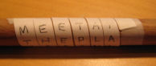

A number between 2 and one less than the length of the message. A key that is equal to or greater than the length of the message (such the key 10 for the message "hellothere", which is 10 letters long) will make the ciphertext the same as the plaintext (which kind of defeats the purpose).
Many ciphers are substitution ciphers, where a message is hidden by replacing each letter of the message with a different letter. In contrast, the rail fence cipher is a transposition cipher, so none of the letters get replaced, their order just gets mixed up. The reordering of the letters is done systematically so that the process can be reversed to recover the original message.
The rail fence cipher follows one of the oldest known methods of encryption, which was used by the Spartans in the fifth century BC. The Spartans would wrap a leather strip around a stick with a specific diameter called a scytale (rhymes with Italy), and then write the message across the wrapped strip. When the strip was unwound, it looked like a meaningless list of letters. When the receiver of the message wrapped the strip around his own scytale, the message could be easily deciphered.

There are a couple of variations of the rail fence cipher. One uses a zig-zag pattern when rearranging the letters, while the other stacks the letters into straight columns. Cipher Suite uses the latter method, which is more similar to how a scytale works.
General encryption systems have two parts: the algorithm (which says what steps to follow to encipher or decipher a message), and the key (which is a secret used in the algorithm that must be the same when enciphering and deciphering a message). Ideally, it doesn't matter if a potential code breaker knows the algorithm used to encipher a message. So long as the key remains a secret, the message is safe (or as safe as the algorithm can make it). This is not the case with the rail fence cipher. There aren't very many available keys, so if someone knows that a message was enciphered using rail fence, they can just try each key by hand.